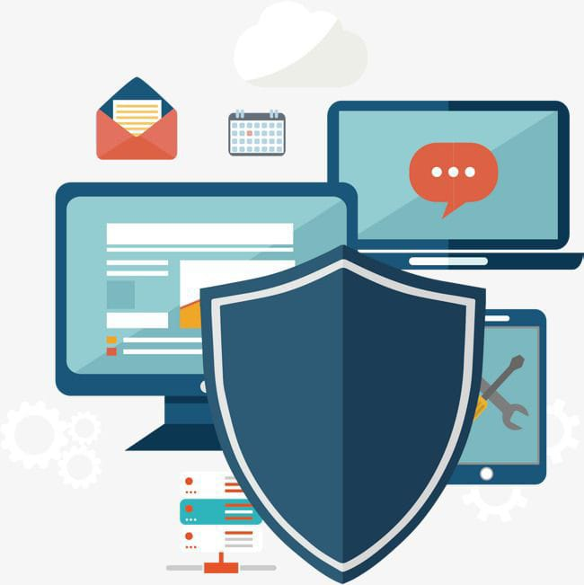

En un futuro cada vez más digitalizado y conectado, la importancia de la seguridad informática se vuelve fundamental. La misión es salvaguardar cada byte de información, fortaleciendo barreras digitales y promoviendo la conciencia cibernética. La seguridad informática será el cimiento de la confianza y la innovación, protegiendo los datos con pasión y precisión en cada paso que demos.
La seguridad informática se refiere a las medidas y prácticas diseñadas para proteger la información, los sistemas informáticos, las redes y los datos contra accesos no autorizados, daños, robo, o cualquier otro tipo de amenaza que pueda afectar la confidencialidad, integridad y disponibilidad de la información. Esto incluye la protección de hardware, software, redes, datos y también la gestión de incidentes de seguridad en caso de que ocurran. La seguridad informática abarca áreas como la autenticación de usuarios, el control de acceso, la encriptación, la detección y prevención de intrusiones, la gestión de parches y actualizaciones, entre otros aspectos. Es fundamental en el mundo digital actual para garantizar la confianza y la protección de la información sensible.
La seguridad informática funciona a través de una combinación de medidas técnicas, políticas, procedimientos y prácticas diseñadas para proteger los sistemas de información. Aquí hay un desglose de cómo funciona: